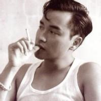

孩童时期的亚索经常把村里人对他的评价信以为真：好听的时候，他的出生是一次判断失误；不好听的时候，他是个永远无法挽回的过错。

和大多数痛苦一样，这些话语也包含着些许真相。他的母亲原本是一位抚养着独生子的寡妇，而那个本应作为亚索父亲的人则如同金秋的微风般吹进了她的生活。随后他不等艾欧尼亚的寒冬降临到这个家庭，就又像那个寂寞的季节一般悄然离开了。
虽然亚索同母异父的哥哥永恩与他截然相反——恭敬、谨慎、自觉——但是他们二人还是亲密无间。当其他孩子戏弄亚索的时候，永恩总是会出来维护他。虽然亚索缺乏耐性，但他的意志却十分坚韧。当永恩开始去村里著名的剑术道场求学的时候，年幼的亚索也跟去了，在外面的风雨中痴痴苦等，直到师父们终于软下了心，打开了大门。
让同辈们咬牙切齿的是，亚索展现出超凡的天赋，成为了数辈生徒中唯一一名得到素马长老关注的人，他是传奇御风剑术的最后一位大师。这位老人看到了亚索的潜力，但就像妄图用绳索束缚旋风一样，大多数教诲对亚索都不管用。永恩恳求自己的弟弟放下傲慢的态度，并送给他一枚枫树种子，这是道场关于谦卑的至高训诫。第二天早晨，亚索成为了素马的徒弟，同时也担任他的贴身侍卫。